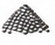
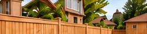

Mulch Calculator
Figure out how much mulch you need for your project.
Open Calculator →The most useful Home & Garden calculators for your projects.
Figure out how much mulch you need for your project.
Open Calculator →
Calculate gravel for driveways, paths and more.
Open Calculator →Estimate soil volume for beds and landscaping.
Open Calculator →Calculate concrete for slabs, footings and patios.
Open Calculator →Estimate paint for walls, ceilings and surfaces.
Open Calculator →Plan tile quantity and project waste.
Open Calculator →Estimate the cost of your fence project.
Open Calculator →Find the square footage of spaces and rooms.
Open Calculator →Estimate materials for your deck project.
Open Calculator →Calculate seed for a greener lawn.
Open Calculator →Explore subcategories to find the right tools and content for your project.
Helpful articles, how-tos, and inspiration for your home and garden projects.
 Guide
GuideLearn how to calculate the right amount of mulch and keep your garden healthy.

Compare gravel types, costs and tips for a durable, great-looking driveway.

GuideFrom measurements to costs, a complete guide to planning your fence project.
 Quick Tips
Quick TipsSimple steps to measure rooms, yards and outdoor spaces accurately.
 Seasonal Tips
Seasonal TipsLearn when to overseed and help grass grow thicker and healthier.
 Guide
GuideA practical guide to calculating paint for any room or project.
InspirationFind out how much soil you need for healthy raised garden beds.
GuideGet cost estimates, material tips and design ideas for your patio.
Quick TipsSimple and affordable ideas to transform your outdoor space.
Curated tool collections for common home and garden projects.
Tools and guides to get your garden ready for spring.
Plan, budget and build your dream outdoor space.
Calculators and guides for pavers, gravel and more.
Essential tools for a thicker, healthier lawn.